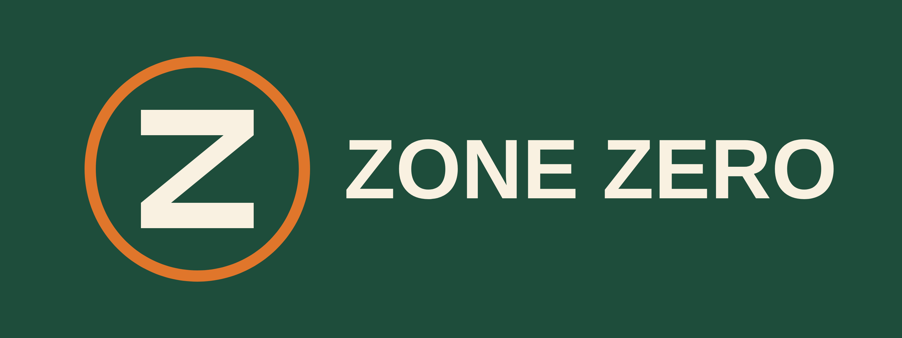
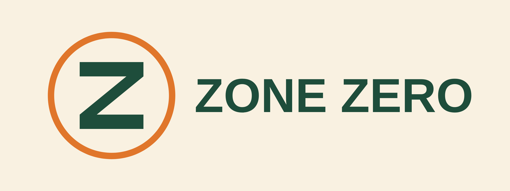
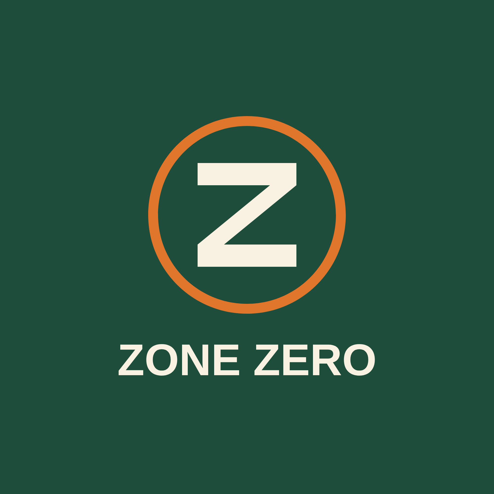
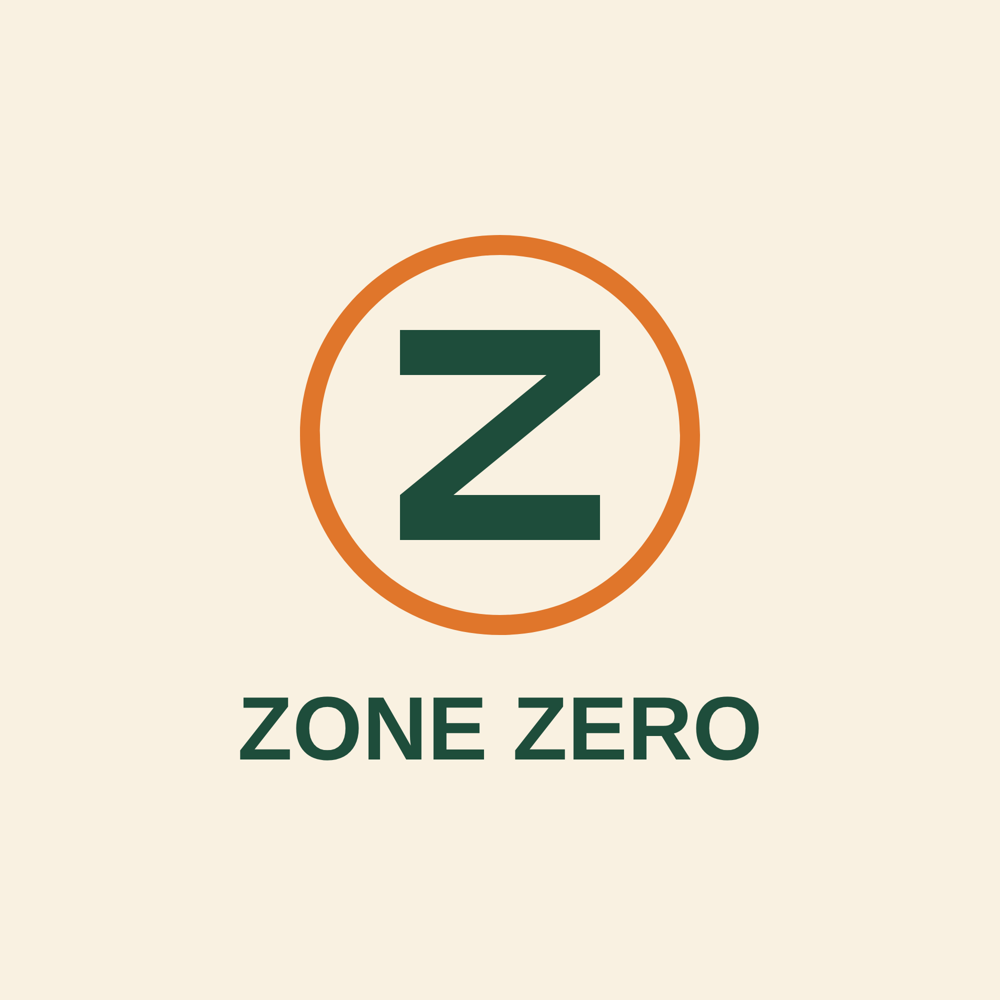
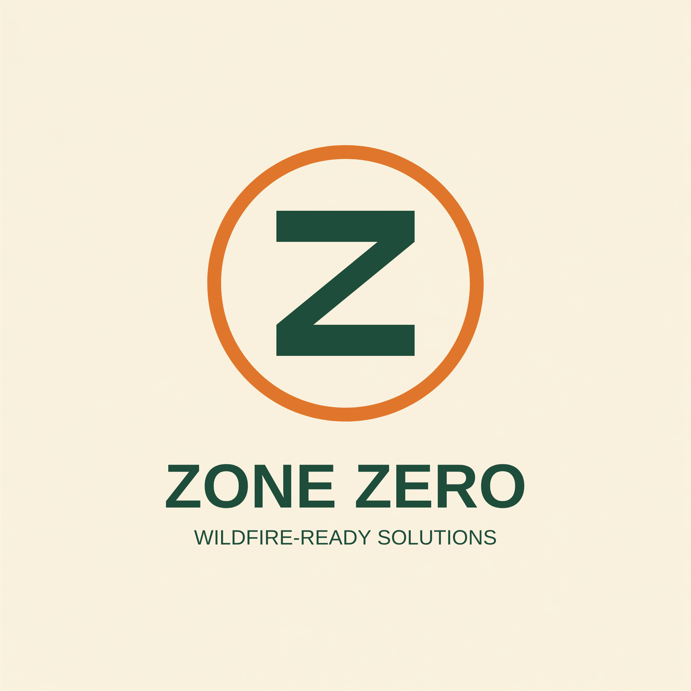

Internal reference · not published to the website
Component library, colors, and layout ratios. Colors below are pulled directly from the live site's Tailwind config and inline styles — not aspirational, this is what's actually deployed.
Last checked against live index.html: 2026-09-22. This page has gone stale twice before (most recently after the Sept 16 logo rebrand went live without it) — if you're reading this after that date, verify against the live site before trusting it.
Defined in tailwind.config in index.html.
sage-light
#8A9A83
sage-default
#6B7A64
sage-dark
#4A5744
terracotta
#E06D53
stone-50
#F9F9F7
stone-100
#F5F5F2
stone-200
#E8E8E3
stone-300
#D5D5CE
stone-800
#2A2A2A
stone-900
#1A1A1A
stone-950
#0F0F0F
Tokenized in tailwind.config as zone.red / amber / amberdark / green (added in the Aug 20 design pass — this page previously and incorrectly described them as inline-only). The site defines exactly three defensible-space zones (0, 1, 2); there is no Zone 3 — a swatch for one was documented here in error and has been removed.
zone-red · Zone 0
#c0492f
zone-amber · Zone 1
#b7791f
zone-amberdark
#92600c
zone-green · Zone 2
#2f855a
Real, currently-deployed colors that exist only as raw hex in index.html — not in tailwind.config. Listed here so they're at least visible; consider promoting the recurring ones to real tokens next time that section is touched.
Header wordmark
#1E4D3B
Terracotta hover
#c85a2f
Photo Check checkbox accent
#6b7f5e — close to but not sage-default
The .zone-plant-card component (Landscaping section) also uses a full set of Tailwind's stock default grays (#1a202c #2d3748 #4a5568 #718096 #e2e8f0 #edf2f7) instead of the site's own stone scale — a pre-existing inconsistency, not swatched individually here.
Two typefaces, loaded via Google Fonts in every page's <head>.
Display — Headlines
Plus Jakarta Sans
Weights loaded: 300, 400, 500, 600, 700. Used for all headings (font-display) and the logo wordmark.
Body — Text
Inter
Weights loaded: 300, 400, 500, 600. Used for all body copy, labels, and UI text (font-sans, the default).
Hero H1
font-display font-light · text-[34px] sm:text-6xl lg:text-7xl · tracking-tight
Section H2
font-display font-bold · text-3xl sm:text-4xl
Subsection H3
font-display font-bold · text-2xl
Body copy sits here at 16px, font-light or font-normal Inter, usually text-stone-600 on light backgrounds.
font-sans font-light · text-base · text-stone-600
Eyebrow / Section Label
text-[10px] uppercase tracking-widest font-bold text-sage-default
Rebranded 2026-09-16 — this supersedes the old two-leaf sage mark shown on this page before today. Current header lockup: a dark-green “Z” in an orange ring (no leaf) beside a live-text “ZONE ZERO” wordmark.
The wordmark stays live text rather than a baked image, keeping it crisp, accessible, and scalable — that principle carried over from the previous mark.
Mark: /assets/logos/zone-zero/zone-zero-mark.png (256×256, background removed) · Wordmark: Plus Jakarta Sans Bold · Wordmark color: #1E4D3B — hardcoded, not a Tailwind token (see “Other Inline Colors” above)
Added alongside the rebrand — the site had none before. favicon-64.png (64×64) and apple-touch-icon.png (180×180), both in /assets/logos/zone-zero/.
Full lockup family exported alongside the header mark. None of these are referenced by index.html today — available for social posts, print, or other placements as needed. The tagline “WILDFIRE-READY SOLUTIONS” exists only inside the tagline variant below; it is not used anywhere live.

zone-zero-horizontal-green.png

zone-zero-horizontal-cream.png — for dark backgrounds

zone-zero-stacked-green.png

zone-zero-stacked-cream.png — for dark backgrounds

zone-zero-stacked-tagline-cream.png — includes “WILDFIRE-READY SOLUTIONS”, unused live
zone-zero-leaf.png) is retired and no longer referenced by index.html, though the file remains on disk.Approved homeowner-facing stationery using the current Zone Zero identity and website branding system.
Approved Letterhead
Use for homeowner correspondence, Photo Check analysis reports, and related communications.
Updated to the Z-in-ring mark · no “Serving the East Bay Hills” line · matches current website identity
CTA styles pulled from the homepage hero and section actions.
bg-sage-default hover:bg-sage-dark
border-white/50, used on dark/image backgrounds
bg-terracotta, hover #c85a2f (not tokenized) · header nav CTA only